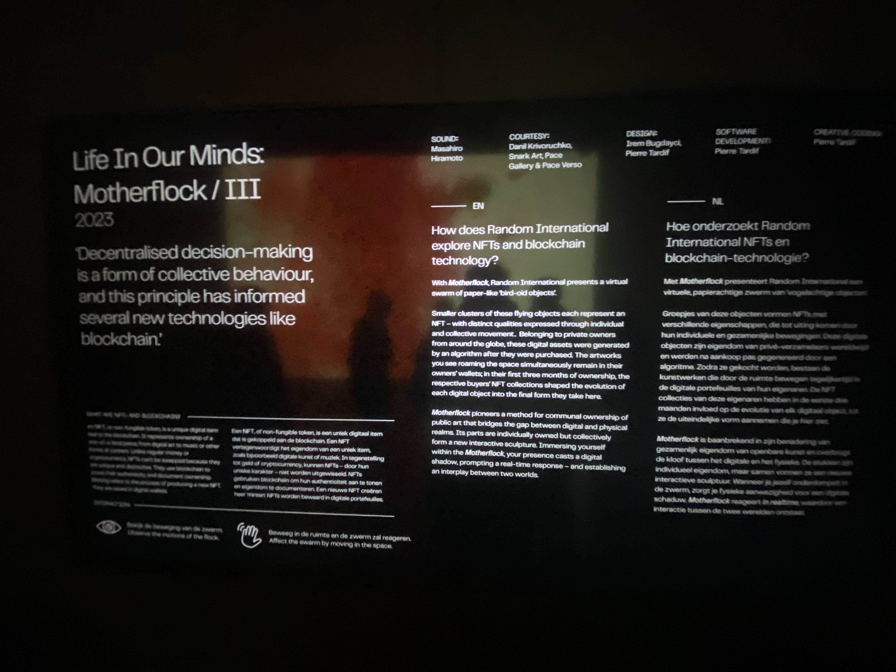
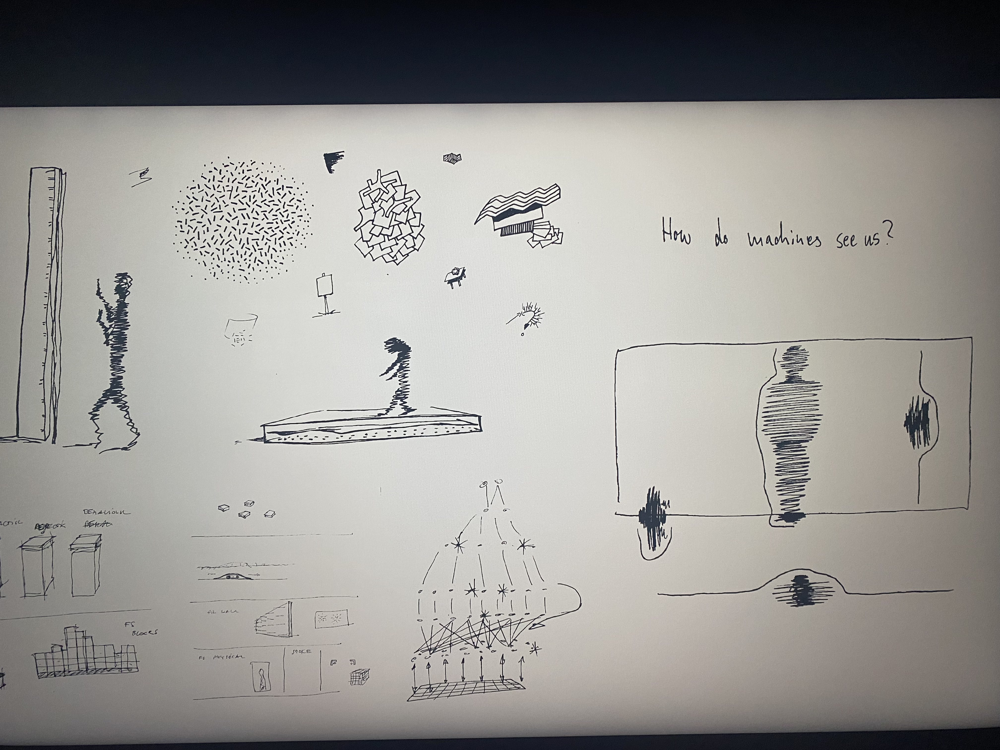
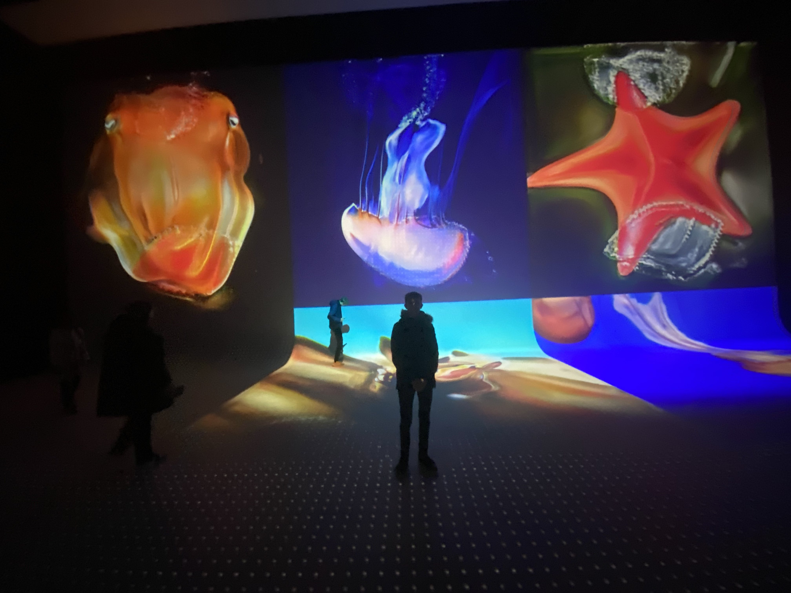
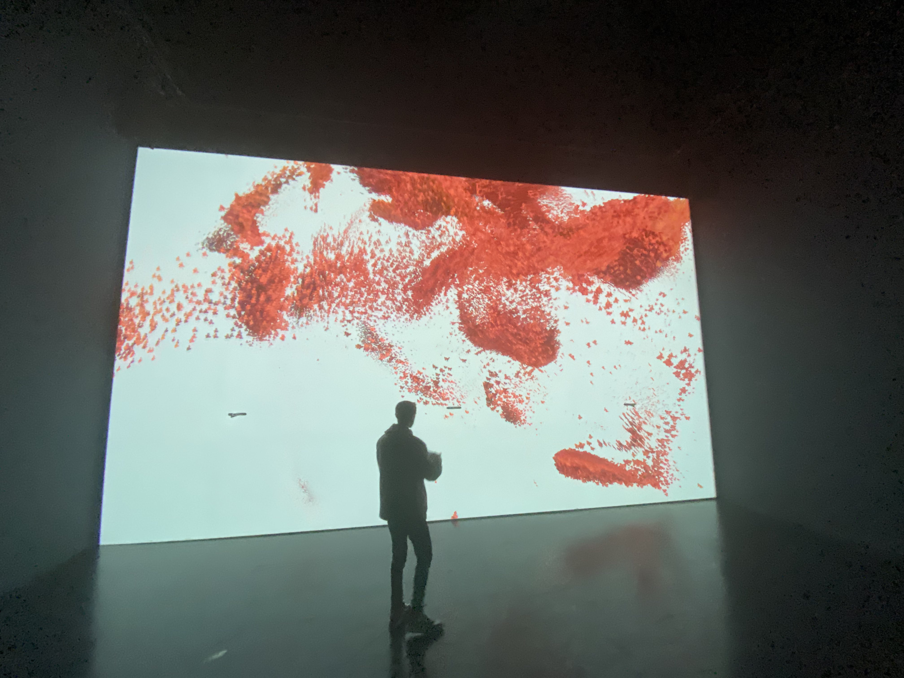

Vanaf 27 september kun je het werk van de postdigitale kunstgroep Random International bekijken in Nxt Museum.
De tentoonstelling toont nieuw voltooide werken en andere die nog nooit eerder in Europa zijn vertoond en volgt het creatieve proces van de kunstenaars,
van 2006 tot vandaag.

De tentoonstelling is samengesteld door Bogomir Doringer en belicht het vakmanschap binnen en de contextuele achtergronden van een overzicht van hun werk.
Opgericht in 2005 is Random International een postdigitale kunstgroep die de impact van technologische ontwikkeling op de menselijke conditie onderzoekt.
Het meest bekend om hun grootschalige interactieve installaties, werkt de groep in een scala aan media,
waaronder beeldhouwkunst, licht, kinetica, video, drukwerk en geluid. Geleid door de oprichters Hannes Koch (geb. 1975, Duitsland) en Florian Ortkrass (geb. 1975, Duitsland),
heeft de groep een studio in Londen en bestaat uit een wereldwijd team van complementair talent.

Dimensional Shaping
Dimensional Sampling is een audiovisuele installatie van kunstenaar en programmeur Yuxi Cao (James) in samenwerking met geluidskunstenaar Lau Hiu Kong (Lawrence).
Het werk verkent de wereldwijde opkomst van QR-codes,
zoals in China waar de codes volledig geïntegreerd zijn in het dagelijkse leven.
Van het kopen van producten tot het identificeren van senioren zelfs de levensverhalen van overledenen op grafstenen maken gebruik van QR-codes.

Yuxi Cao werkt aan interdisciplinaire projecten die zich bevinden op het snijvlak van geluidsvisualisatie,
programmeren en informatica.
Zijn innovatieve aanpak in het maken van kunst heeft er voor gezorgd dat Yuxi Cao wereldwijd talloze ontwerpprojecten kon lanceren,
variërend van ruimtelijke ontwerpen tot mediakunst-installaties en kunst in de openbare ruimte.

Je luistert in Dimensional Sampling naar de soundtrack van Lau Hiu Kong (Lawrence),
muzikant, performer en sounddesigner gevestigd in Hong Kong.
Lawrence onderzoekt graag verschillende disciplines in de kunst.
Zijn muziek varieert van talrijke kamerensembles, orkesten, Chinese instrumenten, live elektronica tot live audiovisuele werken.